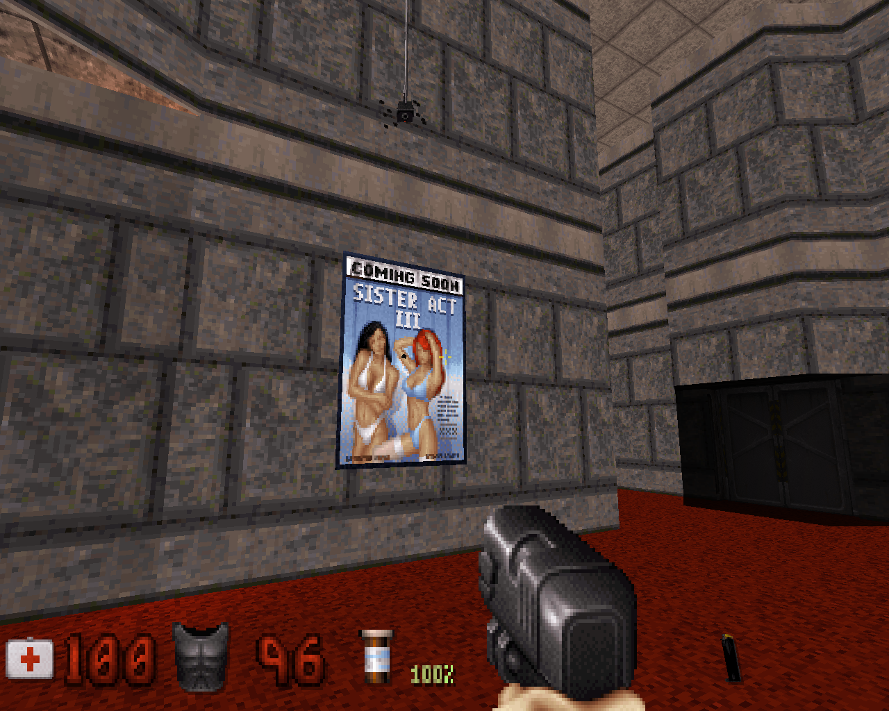
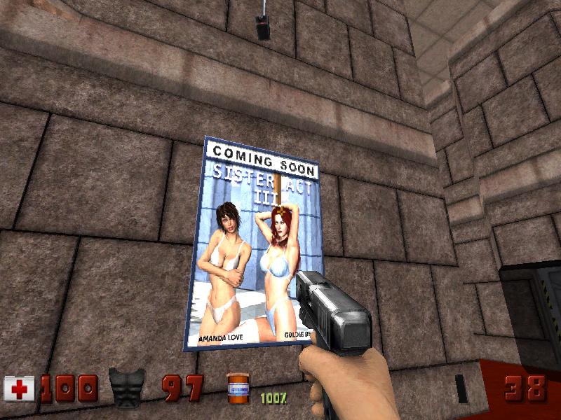
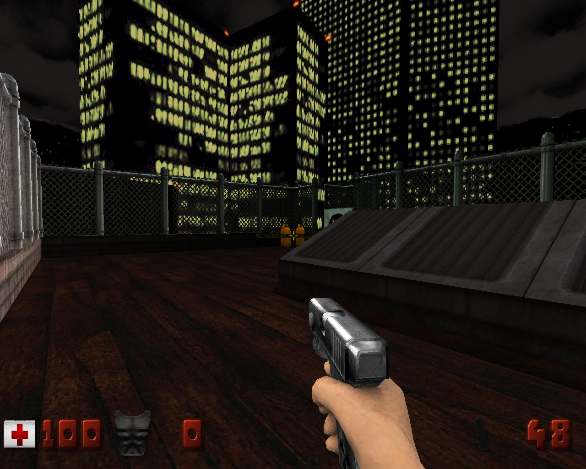
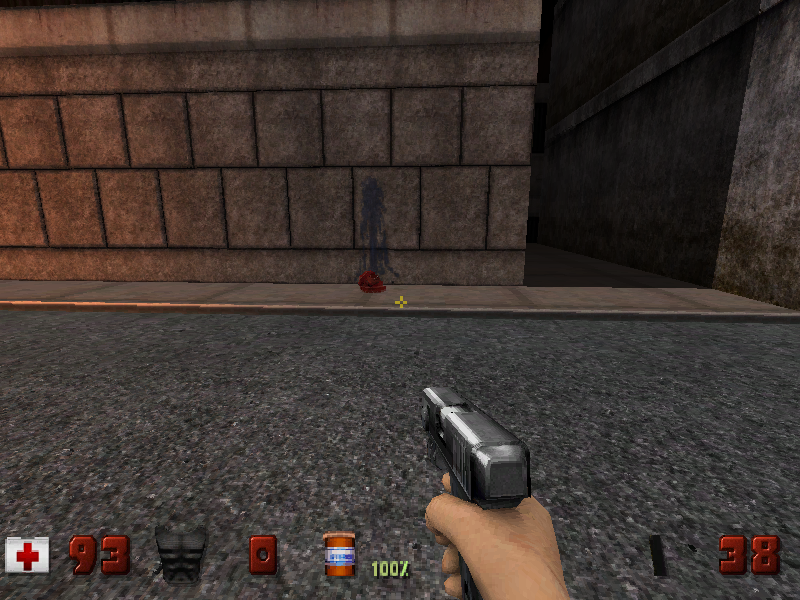

Продолжаю серию заметок о запуске старых игр - стрелялок от первого лица:
На этот раз я откопал современный порт Duke Nukem 3D, который называется Eduke32. Официальный сайт проекта находится по следующему адресу: http://www.eduke32.com/ Для установки движка игры воспользуемся репозиторием Debian на сайте проекта. На странице Apt Repository находим интересующий нас раздел Lenny. В соответствии с инструкциями добавляем репозиторий в систему, прописав следующие две строчки в файл /etc/apt/sources.list:
deb http://apt.duke4.net lenny main deb-src http://apt.duke4.net lenny main
Теперь добавим PGP-ключ репозитория с помощью следующей команды:
# wget http://apt.duke4.net/key/eduke32.gpg -O- | apt-key add -
Обновим список пакетов:
# apt-get update
И установим интересующие нас пакеты с движком игры и с условно-бесплатной версией самой игры:
# apt-get install eduke32 duke3d-shareware
Кроме этих двух пакетов в репозитории имеются ещё два пакета: build-engine-utils - коллекция инструментов, предназначенных для манипуляции данными игр, основанных на движке Build (из таковых я припоминаю ещё игры Blood, Redneck Rampage и Outlaws) и mapster32 - редактор карт, работающий в режиме OpenGL. В общем, в этом репозитории, похоже, есть всё необходимое, чтобы делать новые карты и модификации игры.
Но это ещё не всё. Ещё я нашёл проект High Resolution Pack, в рамках которого люди занимаются повышением разрешения текстур и заменой всех спрайтов на модели: polymer_hrp132.zip, архивчик уже достиг объёма 466 мегабайт!
Скачаем последний релиз HRP и распакуем его в каталог с настройками личными игры текущего пользователя:
$ wget http://www.duke4.org/files/nightfright/beta/polymer_hrp132.zip $ unzip polymer_hrp132.zip -d ~/.eduke32
Теперь при запуске игры, в окошке выбора разрешения нужно указать использование движка Polymer, который как раз и умеет рисовать трёхмерные модели.
Вот так игра выглядит на разрешении 1280x1024 без использования HRP:
А вот так выглядит на разрешении 800x600 с использованием HRP:
Ещё пара снимков с использованием HRP. Этот с разрешением 1280x1024:
Этот с разрешением 800x600:
Имеются, однако, и недостатки - игра довольно сильно тормозит, требует много ресурсов (на моём компьютере игра отъела полгигабайта памяти в режиме без HRP), отчего иногда замораживается секунд на 5-10 и иногда падает. Если хотите поиграть в игру полноценно, советую найти полную, не условно-бесплатную версию файла ресурсов и уменьшить настройки качества картинки.